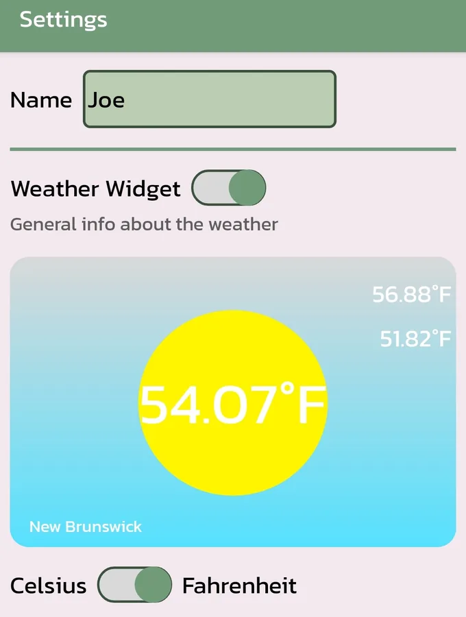
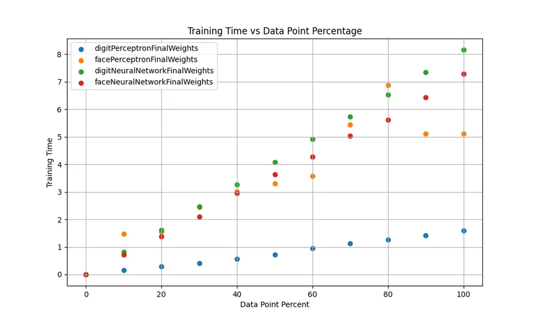
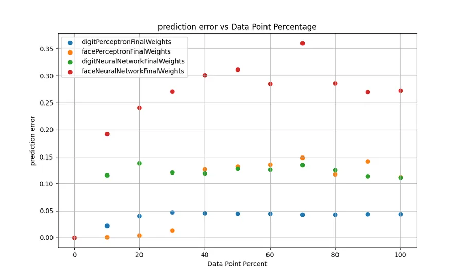
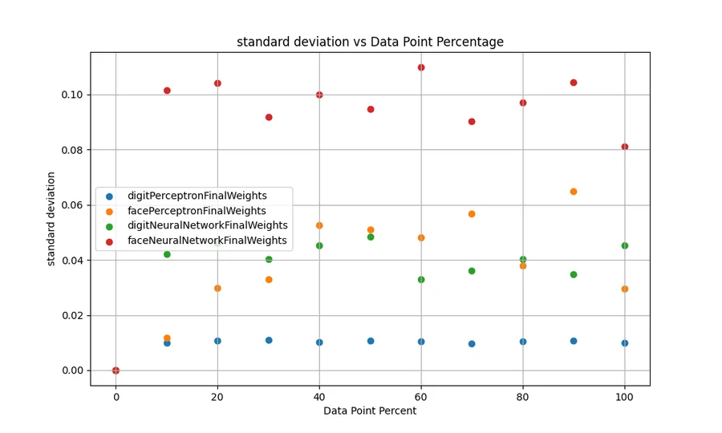
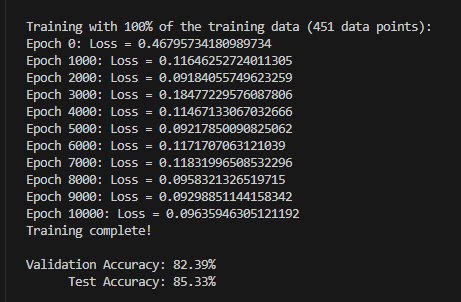
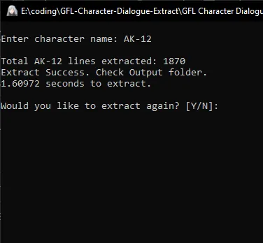
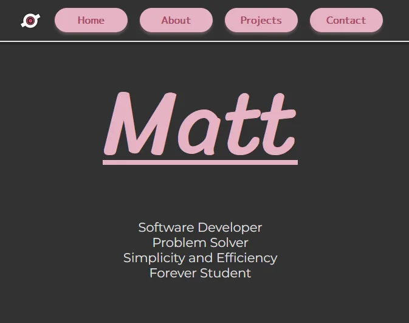

hackRU Lifestyle App
Developed with a team of 3 others for a hackathon, this is a healthy lifestyle app which enables people to better plan their day based on a weather api and xml data. Utilized persistent data and json serialization with help from the GSON library. Made with Android Studio
Face and Digit Classification (Private)
Basic 2 layer neural network and perceptron coded in Python to perform optical character recognition on face images and handwritten digits with varying data sizes.Results: In general, larger data sizes result in longer training times, but higher accuracy. Smaller data sizes result in shorter training times, but lower accuracy.
Diminishing returns in accuracy after a certain data size shows that more data points doesn't mean better accuracy and wastes time and resources to train the network.




Per-character Dialogue Extract
Python code to extract dialogue spoken by a specified character from the hit gatcha game Girl's Frontline.Takes input from txt files and outputs both a txt and csv file of character dialogue. Can be run from an exe file

Personal Portfolio Website
Weekend project to learn basic HTML, CSS, and JavaScript. Will probably recreate with React